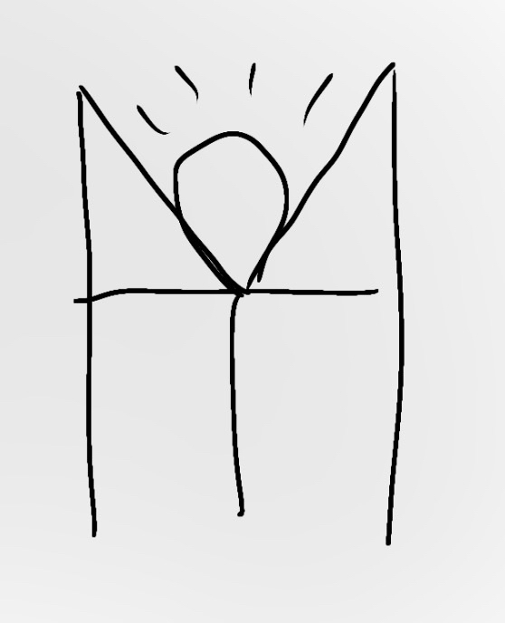

<!DOCTYPE html>
<html>
    <head>
        <title>Luna - CE</title>
        <link rel="icon" type="img/png" href="/Data/luna.png">
        <!-- Single theme link for swapping -->
    <link id="theme-link" rel="stylesheet" href="/css/light.css">
    </head>

    <body>
        <aside style="width: 95%; padding-left: 15px; margin-left: 15px; float: right;">

            <aside style="float: left;">
            <a href="./">
                
            </a>
            </aside>
            
            <!--Top of page: Title-->
            <h1 style=
            "box-shadow: 5px 5px #000C44;
            border: 4px solid #000C44;
            border-radius: 40px;
            text-align: center;
            background-color:#35B1FF;
            color: #14003B;">
                Luna
            </h1>
                    <!--image-->
                    <aside style="all: inherit; width: 50%; padding-left: 15px; margin-left: 15px; float: right;">
                    <br>

                    <!--Image comment-->
                    <small>
                        Luna's symbol.
                    </small><br><br>
                    <p style=
                    "width: 490px;
                    border: 2px solid black;
                    border-radius: 15px;
                    text-align: center;
                    background-color: beige;
                    color: black;
                    box-shadow: 2px 2px;">
                    <!--Name-->
                    Luna<br>
                    <!--Pronouns-->
                    She/He/They<br>
                    <!--Defining trait-->
                    Defining Trait: Emo<br>
                    <!--Notes-->
                    <b>
                        Notes:<br>
                    </b>
                    <small style="color:black;">
                        Possesses no heat.
                    </small>
                    </p>
                    </aside>
            <!--Top of page: Quote-->
            <h5 style=
            "width: 40%; 
            border-top: 2px solid;
            border-bottom: 2px solid;
            border-left: 1px solid;
            border-right: 1px solid;
            border-radius: 8%;">
                "The world is cold and unjust. I don't see why I have to pretend it isn't."<br>
            <small>
                <b>
                    <small>
                        - Luna
                    </small>
                </b>
            </small>
            </h5>
            <!--Top of page: Homepage Hyperlink-->
            <h3>
                <a href="/">Back to home</a>
            </h3>
            <!--Top of page: Infoboxes (Page Warnings)-->

            <!--Missing Content-->
             <p style=
            "width: 40%;
            border-radius: 15px;
            font-size: large;
            background-color: crimson;
            text-align: center;">
            <b style="text-shadow: 1px 1px;"><br>This page is missing content.<br><br></b>
            <small>
                Missing content: Table of contents, Lore, Gallery, etc.
                <br><br></small>
            </p>

            <!--Missing Images-->
             <p style=
            "width: 40%;
            border-radius: 15px;
            font-size: large;
            background-color: crimson;
            text-align: center;">
            <b style="text-shadow: 1px 1px;"><br>This page is missing images.</b><br><br>
                <small>Missing images: Luna's character sheet.
                <br><br></small>
            </p>

            <!--Middle of page: Official Description-->
                    <p style="font-size: x-large;border:none;box-shadow: none;"><b>Official Description:</b></p>
                    <p style=
                    "border: 1px solid;
                    width:45%;
                    border-radius: 100%;">
                    </p>
                    Given a physical form by the Moonstone, Luna is the moon’s characteristics projected onto Earth in human form. 
                    For her first years on Earth, Luna hasn’t had the best experience with humans due to the shade of her skin, which 
                    taught her to be cautious of everyone. Despite that, Luna still possesses a hope for the youth and will do anything 
                    in her power to protect them, other than care about herself.<br><br>
        <!--Keep these at very bottom-->
        <br>
        <!-- Dark mode toggle button -->
        <button id="dark-toggle" type="button" style="width: fit-content; height: fit-content;" onclick="toggleDarkMode()">
            Toggle Dark Mode
        </button>

        <br><br>
        <b><small><small>
            Update convention: major.minor.patch(stage of dev)<br>
            Site Version: <div id="text-container">Loading...</div>
        </small></small></b>

        <!-- Dark mode JS -->
        <script src="/darkmode.js"></script>
        <!-- Version number JS -->
        <script src="./script.js"></script>
    </body>
</html>